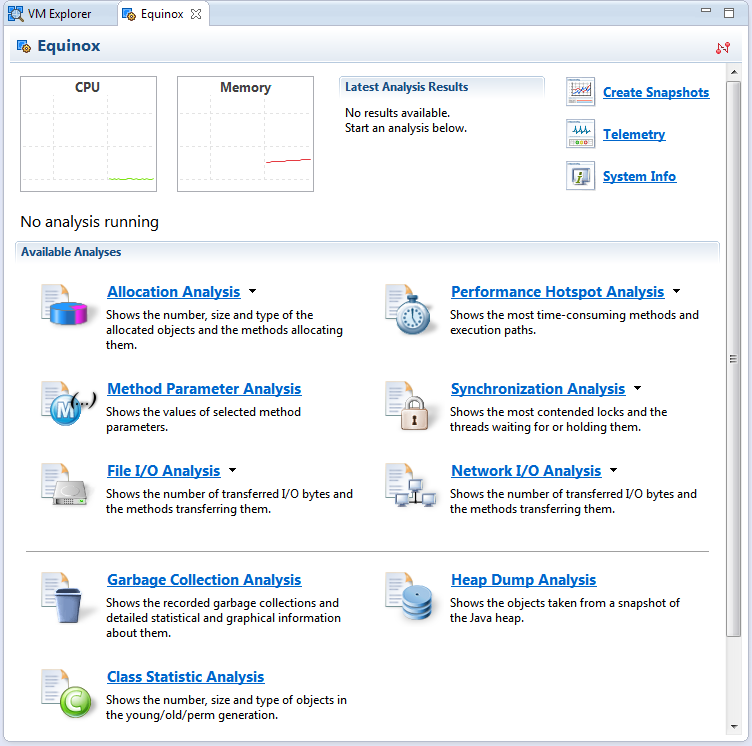

Profiling Applications Locally
After you have created a Web application and verified that it is functionally correct, you may want to inspect its runtime behavior by profiling the application. This helps you to:
- Check and optimize memory usage
- Identify frequently called operations (bottlenecks and hotspots)
- Identify slow performance
- You have developed and deployed a Web application using the Eclipse IDE. For more information, see Deploying and Updating Applications.
- You have installed SAP JVM as the runtime for the local server. For more information, see Setting Up SAP JVM in Eclipse IDE
- Run your Web application on a local server.
- From the server context menu, choose Profile. Cases:
- If your server has been stopped, it will be switched to mode [Profiling].
- If your server has been running, it will be restarted and switched to mode [Profiling].
Note Since profiling only works with SAP JVM, if another VM is used, going to Profile will result in opening a dialog that suggests two options - editing the configuration or canceling the operation. - The Profiling perspective is opened.
- Choose the type of analysis to perform.

- If the server is in profile mode, and you choose Restart in Profile from the context menu, the profile session will be restarted in [Profiling] state.
- If the server is in profile mode, and you choose Restart or Restart in Debug from the context menu, the profile session will be disconnected and the server will be restarted.
You have successfully started a profiling run of a locally deployed Web application. You can now trigger your work load, create snapshots of the profiling data and analyze the profiling results.
When you have finished with your profiling session, you can stop it either by disconnecting the profiling session from the Profile view or by restarting the server.
Refer to the SAP JVM Profiler documentation for details about the available analysis options.
The documentation is available as part of the SAP JVM Profiler plugin in the Eclipse
IDE and can be found via  Help
Help  Help Contents SAP JVM Profiler
Help Contents SAP JVM Profiler  .
.